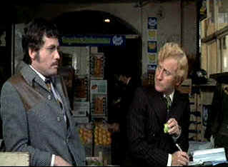

| Frenzy
(SE)/B+,B+ |
| Universal/1972/116/ANA
1.85 |
While many were poised to beat the death roll on the critical drums
after the triple whammy of Marnie, Torn Curtain and Topaz, Frenzy in
many ways was a return to form for Alfred Hitchcock. It's even a return to England for Hitchcock,
emphasized with pleasure in his overhead tour of the Thames River.
Frenzy once again explores the "wrong man" theme
prevalent in many of Hitchcock's best films. Frenzy may not be the best of Hitchcock, but
there are so many vintage Hitchcock touches that it makes you forget some of the film's
shortcomings. His macabre humor is alive and well and it integrated into the horrific murders of
the serial killer. Even though we know who the killer is quite early on, the suspense mounts
effectively.
 |
| A sympathetic ear. ©Universal |
There's a bit too much awkward exposition about the neck tie strangler at the
outset of Frenzy, and the one insurmountable hurdle that Frenzy never leaps over is
the lack of any appealing characters, though Chief Inspector Oxford keeps manages to team with his
wife for some wonderful Hitchcock humor.
Richard Blaney is a bitter former Royal Air Force officer working as a
bartender in a local pub. Blaney's habitual drinking about abrasive manner lead him to an early
exit from his job and sets him down a path of coincidental suspicion. A cloud of murder hangs over
Blaney's head as thick as any London fog. It's clear to everyone not in the know that Blaney's the
one. His girl friend reluctantly believes in him, an old RAF mate is willing to help up to a point
and a local wholesale grocer Bob Rusk is willing to stand by Blaney until the going gets too rough.
Though Blaney is clearly a "wrong man," he's also a thoroughly disagreeable heel. It's
pretty hard to muster any sympathy for him in a movie. It is the fatal flaw of Frenzy that
prevents it from approaching the best of Hitchcock.
The screenplay is adapted from the novel Goodbye Piccadilly, Hello
Leicester Square by playwrite Anthony Shaffer whose Sleuth had been a recent stage success. It's
very well scripted. It's often shocking. The first murder is horribly explicit. No mercy for victim
or audience. Subsequent mayhem is treated with varying style. What we don't see becomes even more
horrific after the first brutal slaying.
Jon Finch tries hard as Richard Blaney, but the script makes him a pretty
cardboard figure. He glares, drinks, wines, and sharpens up his nasty act through to the very end.
Barry Forster is very effective as Rusk. His affable smile nimble changing of emotional gears works
perfectly. Alec McCowen is very efficient as the henpecked chief inspector and Vivien
Merchant is rather hilarious as his culinary spouse.
Frenzy has been transferred from excellent elements.The DVD looks
almost as fresh as a newly minted film. Color is consistently well saturated and accurate. Check
out the fine array of color at the wholesale grocer's. Shadow detail is revelaed to precise effect
and overall contrast ratio is excellent. Blacks are deep, blue skies quite stable. Universal
delivers a consistently sharp transfer with only a hint of edginess in high peak transition scenes.
Dolby Digital 2 channel mono sound is clear.
The documentary icludes interviews with cast members Jon Finch, Barry
Forster, and Anna Massey. Anthony Shaffer remembers being hired by Hitchcock and Peter Bogdanovich
and Patricia Hitchcock O'Connell once again appear to add critical and personal
perspectives..
|
|
|
|

Selections from the Feature Archive include articles on
Akira Kurosawa, Frank
Darabont, Blonde Bimbos, Hollywood Street Gangs, or Vietnam: The
Hollywood Pariah, and many more....
Body Parts

Hollywood's long fascination with parts of the body is explored
piece by piece.

Need a daily fix of movie
quotes. Reel Quotes Newsletter has the answer. Click on the Reel Quotes symbol for more.
 
Bound/B+,A-
Before the Wachowski Brothers brought The Matrix to life,
they explored the darker side of human nature in this delicious, malicious little flick.

Imaging Science Foundation
The Imaging Science Foundation promotes proper standards in home theater viewing. ISF trained
technicians offer monitor calibration services to consumers. The difference in a properly
calibrated monitor can be astounding. Click on the image to find an ISF member near you.
 Gary Morris's insightful publication Bright Lights
Film Journal turns the celluloid in films from a unique perspective. Click on the image above
for more pure movie views. Gary Morris's insightful publication Bright Lights
Film Journal turns the celluloid in films from a unique perspective. Click on the image above
for more pure movie views.

European film portal and hard to find video store.

Original articles, DVD reviews, links, forum discussion and more.
|